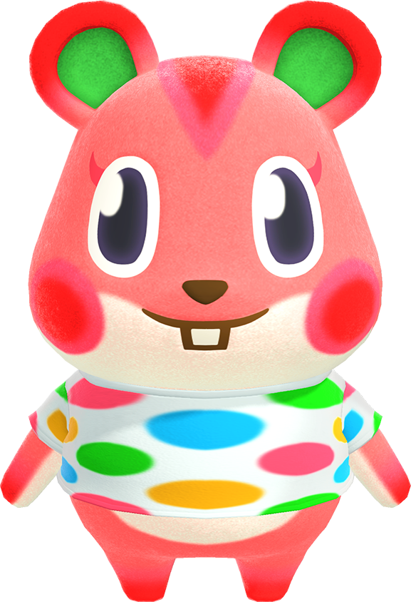

Apple is a pink hamster with big oval eyes and red cheeks and ears. A streak of red runs from the top of her head to her forehead. The insides of her round ears are green and her underarms are white. In addition, she has a white patch on her abdomen, mostly obscured by her clothes.

Audie is a peppy wolf villager in the Animal Crossing series. She first appeared in Animal Crossing: New Horizons and was added to Animal Crossing: Pocket Camp to coincide with the former's release. As of the release of New Horizons, she is the only peppy wolf in the series.
Dizzy is a lazy elephant villager in the Animal Crossing series. He has appeared in all games to date except Animal Crossing: Pocket Camp.
Dom is a jock sheep villager in the Animal Crossing series. He first appeared in Animal Crossing: New Horizons and was added to Animal Crossing: Pocket Camp to coincide with the release of the former.
 Flora is a peppy ostrich villager in the Animal Crossing series that first appeared in Animal Crossing: New Leaf. She borrows Nana's picture quote in Animal Crossing: Wild World, although Flora's has a period instead of an exclamation mark. Her catchphrase is also the name of another peppy villager, Pinky.
Kitt is a normal kangaroo villager in the Animal Crossing series who appears in all games to date. Her name may come from "pocket", referring to her pouch.
Lolly is a normal cat villager in the Animal Crossing series. She first appeared in Doubutsu no Mori e+ and has appeared in all subsequent games except Animal Crossing: Wild World.
Pecan is a snooty squirrel villager in the Animal Crossing series who appears in every game. Her name is likely derived from the type of nut, as squirrels are commonly associated with nuts.
Flora is a peppy ostrich villager in the Animal Crossing series that first appeared in Animal Crossing: New Leaf. She borrows Nana's picture quote in Animal Crossing: Wild World, although Flora's has a period instead of an exclamation mark. Her catchphrase is also the name of another peppy villager, Pinky.
Kitt is a normal kangaroo villager in the Animal Crossing series who appears in all games to date. Her name may come from "pocket", referring to her pouch.
Lolly is a normal cat villager in the Animal Crossing series. She first appeared in Doubutsu no Mori e+ and has appeared in all subsequent games except Animal Crossing: Wild World.
Pecan is a snooty squirrel villager in the Animal Crossing series who appears in every game. Her name is likely derived from the type of nut, as squirrels are commonly associated with nuts.
 Ruby is a peppy rabbit villager in the Animal Crossing series. She first appeared in Animal Crossing: Wild World and has appeared in all subsequent games.
Ruby is a peppy rabbit villager in the Animal Crossing series. She first appeared in Animal Crossing: Wild World and has appeared in all subsequent games.